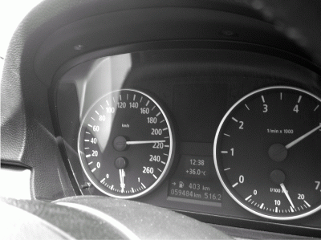

Об экономной езде
Если вы едете в отпуск, то можете сэкономить немного денег на бензине, которые можно потратить на что-то более полезное. Ведь если правильно вести автомобиль, то на 1000 километров можно сэкономить довольно ощутимую сумму. Сразу хочу отметить, что все, о чем мы будем говорить в этом разделе, касается только нового автомобиля.
Было подсчитано, что при правильном вождении автомобиля существует возможность понизить расход бензина до 25 % (это касается только бензиновых двигателей, поскольку на дизелях расход, конечно, будет ниже, но не так ощутимо). Так почему бы не воспользоваться этой возможностью?
Сэкономить топливо можно с помощью правильно выбранной передачи и оборотов двигателя. Приведу такой пример. Предположим, что вы едите на пятой передаче, а обороты низкие – всего 1500. Да, ваш автомобиль будет ехать и расходовать при этом совсем немного бензина. Но перед вами – крутой подъем. И тут ваш автомобиль сожрет намного больше бензина, если бы вы ехали на третьей передаче с 4500 оборотов! Почему? Сравним человека с автомобилем. Задержите дыхание. Вы же экономите бензин, не нажимая на педаль газа. Вот теперь будем экономить воздух. Пройдет минута, и вам нужен глоток воздуха, иначе вы задохнетесь. Вдохните. Каким был ваш вдох? Вы заметили, сколько воздуха вы вдохнули? Правильно, много, чтобы восстановить нормальное дыхание. За эту минуту, если бы вы дышали, как обычно, вы бы вдохнули меньше воздуха. Аналогично и автомобилю нужно будет много бензина, чтобы выехать на подъем.
Помните, что при движении по трассе перерасход топлива неизбежен, если обороты ниже 2000. Старайтесь держать обороты двигателя в районе 3000 – и двигатель будет резвый, и не будет перерасхода топлива.
Также на расход топлива влияют кондиционер, люк и открытые окна. Чтобы расход был минимальным, нужно ехать с выключенным кондиционером и закрытыми окнами и люком. Правда, так можно и задохнуться. Поэтому нужно выбирать – или кондиционер, или открытые окна. Если скорость свыше 100 км/ч, включайте кондиционер и закрывайте окна (и люк). Если же скорость ниже 100 км/ч, например, при передвижении по городу, выключайте кондиционер и открывайте окна. Почему? На большой скорости вступают в силу законы аэродинамики, вот она во всем и виновата.
Теперь сформулируем правила экономичной езды.
• Обороты бензинового двигателя нужно держать в пределах 2500–3500. При этих оборотах на пятой передаче скорость у вас будет примерно 110–140 км/ч, что вполне нормально. Если обороты ниже 2500, пора понижать передачу.
• Если у вас дизельный двигатель, то его обороты – 1500–2500.
• На повышенную передачу нужно переходить, когда двигатель достиг 3500 оборотов (2500 для дизеля). Если переходить уже некуда (вы на пятой передаче), то просто приотпустите педаль газа – дальше разгоняться не нужно. Если у вас шестиступенчатая коробка, то не нужно думать, что я не знаю об их существовании, просто она есть далеко не у всех, поэтому и считаю пятую последней.
• Турбированный мотор работает в экономичном режиме до включения компрессора (турбины), то есть до начала резкого подхвата. Вы уже знаете, при каких оборотах происходит такой подхват, поэтому просто не превышайте их.
• Соблюдайте приличную дистанцию до впередиидущего автомобиля. Так вы будете меньше пользоваться тормозами, следовательно, меньше будете разгоняться, следовательно, сэкономите топливо. Ведь наша задача – сэкономить топливо, а не обогнать всех.
• Избегайте интенсивных разгонов.
• Ночью расход топлива будет меньше, потому что не нужно включать кондиционер и открывать окна, но ночные поездки более опасные, поэтому не нужно экономить на своей безопасности.
• При включении кондиционера расход топлива повышается на 5-10 %, поэтому включать кондиционер нужно на короткие промежутки времени. Не нужно, чтобы он работал постоянно.
• Для экономии топлива на АКПП можно использовать или экономичный режим АКПП, или зимний (да, даже летом).
• Все, что закреплено на крыше авто, увеличивает сопротивление воздуха, следовательно, увеличивает расход топлива. И чем больше вы нагрузили сверху, тем больше автомобиль будет есть бензина. Не понимаете, о чем я? В вашем авто есть люк? Если да, то проведем небольшой эксперимент. Откройте его, посадите кого-то за руль, через открытый люк поместите в салон какую-нибудь планку длиной 2–2,5 метра. Теперь попросите вашего товарища разогнаться хотя бы до 50 км/ч. Вам легко удерживать планку? Нет? Можете тогда себе представить, что происходит на скорости 100 км/ч и более!
• Как уже отмечалось, можно немного повысить давление в шинах – на 0,1–0,2 бара – это позволит сэкономить немного топлива.
Некоторые автомобили оснащаются экономайзерами – приборами, показывающими мгновенный расход топлива (расход топлива в данный момент). Если у вас есть такой прибор, посматривайте на него время от времени, и желание ездить быстро сразу станет меньше. Обратите внимание на рис. 11: сейчас расход топлива 16 литров на 100 км! Если продолжать движение в таком же духе, то через час мы пройдем почти 220 км, но потратим более 32 литров бензина (ведь расстояние больше 200 км). Если ехать со скоростью 120 км/ч, то 220 км мы пройдем чуть меньше, чем за два часа, но израсходуем всего 14–15 литров бензина. Как видите, экономия на лицо.

Рис. 11. Экономайзер.